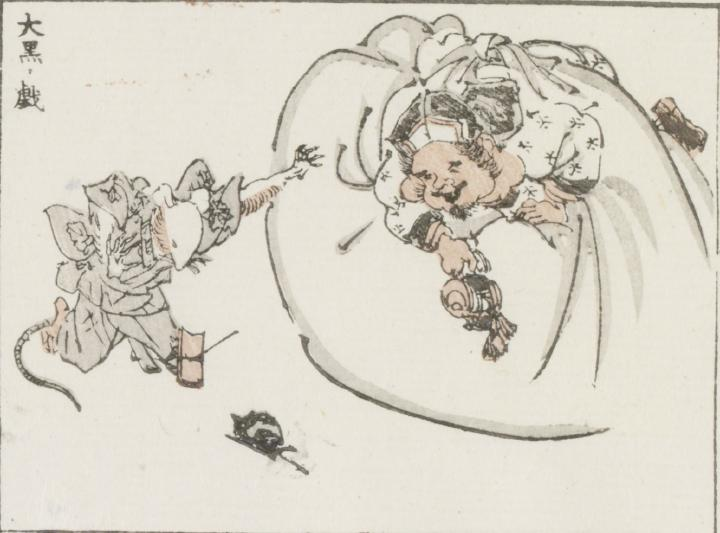

大黒；ダイコク，鼠；ネズミ

大黒天が体の倍以上ある包みの上に、小槌を持って乗りかかっている。着物をまとった鼠は片足を鼠捕りにひっかけて、両手をあげている。
著作者：牧墨僊／出典：親書誌：U426_nichibunken_0097：滑稽洒落狂画苑；コッケイシャレキョウガエン／日付：2007／資源識別子：U426_nichibunken_0097_0006_0000
Copyright (c)2010- International Research Center for Japanese Studies, Kyoto, Japan. All rights reserved.